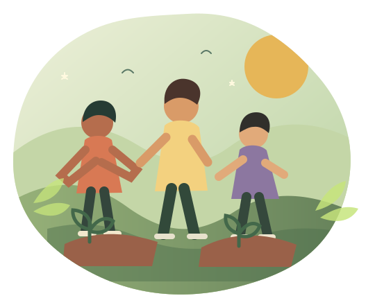

01 / 06
COMMUNITY SUPPORT
Project Seva
Providing food and clothing to people facing hardship, with dignity and care at the heart of every act of support.
Ask about SevaCommunity care grows when we grow it together
Find your way to helpUNITING MINDS FOR CHANGE
A community is strongest when everyone has a chance to learn, feel supported and shape what comes next.
InAmigos Foundation brings people together around practical, people-first initiatives for a more inclusive and sustainable future.

A FOUNDATION BUILT ON TOGETHERNESS
InAmigos Foundation is a Section 8 non-profit based in Bilaspur, Chhattisgarh, founded in 2020.
Its work brings volunteers and communities together to respond to everyday needs and create more opportunities for people to thrive. Across six initiatives, the foundation focuses on education, community support, animal welfare, women’s empowerment, the environment and skill development.
Visit InAmigos on LinkedInSIX INITIATIVES, ONE SHARED PURPOSE
Each project responds to a different part of community wellbeing. Together, they make space for care today and possibility tomorrow.
COMMUNITY SUPPORT
Providing food and clothing to people facing hardship, with dignity and care at the heart of every act of support.
Ask about SevaCHILDREN & LEARNING
Creating more room for children to learn, grow in confidence and imagine a future full of possibility.
Ask about BachpanshalaANIMAL WELFARE
Promoting compassionate care for animals through feeding, protection and support for those in need.
Ask about JeevWOMEN’S EMPOWERMENT
Supporting women through skill development and pathways toward greater confidence and financial independence.
Ask about UdaanENVIRONMENT
Encouraging environmental conservation and sustainable choices that help care for our shared home.
Ask about PrakritiSKILLS & EMPLOYABILITY
Building skills and employability through learning opportunities that help people take their next step.
Ask about VikasWant to know what’s happening near you? Reach out to the foundation for current opportunities.
THE PURPOSE BEHIND THE PROJECTS
Lasting change can start with meeting an immediate need—and grow when people have the tools and support to shape their own future.
Community support and animal care begin with compassion in the moments it is needed.
Education, skills and empowerment help people build confidence and new possibilities.
Environmental action helps communities nurture a healthier, more sustainable future.
THERE’S A PLACE FOR YOU HERE
Give time, share a skill, support a project or help more people discover the work. Start a conversation with InAmigos to find the right next step.